重要
翻訳は あなたが参加できる コミュニティの取り組みです。このページは現在 84.85% 翻訳されています。
14. メッシュデータの操作
14.1. メッシュとは？
メッシュとは非構造格子のことで、通常、時系列成分やその他の成分を持ちます。空間成分には、2Dまたは3D空間の頂点、辺、面の集合が含まれます。
頂点 - （レイヤの座標参照系の）XY(Z) 成分を持つ点です
辺 - 頂点の組を接続します
面 - 面は閉じた形状を形成する辺の集合です。通常は三角形または四辺形（quad）で、頂点数が多い多角形はめったにありません
上記の要素に基づいて、メッシュレイヤは様々なタイプの構造を持つことができます：
1Dメッシュ：頂点と辺で構成されます。辺は2つの頂点を接続し、その上にデータ（スカラまたはベクタ）を割り当てることができます。 1Dメッシュネットワークは、たとえば、都市の排水システムのモデリングに使用できます。
2Dメッシュ：三角形の面や、構造格子または非構造格子の四角形の面で構成されます。
3Dレイヤードメッシュ：複数の積み重ねられた2D非構造メッシュで構成され、それぞれが垂直座標によって垂直方向（レベル）に押し出されたものです。頂点と面は、各垂直レベルで同じトポロジを持っています。メッシュ定義（垂直レベルの押し出し）は、一般的には時間とともに変化する可能性があります。データは通常、ボリュームの中心か、またはパラメトリック関数によって定義されます。
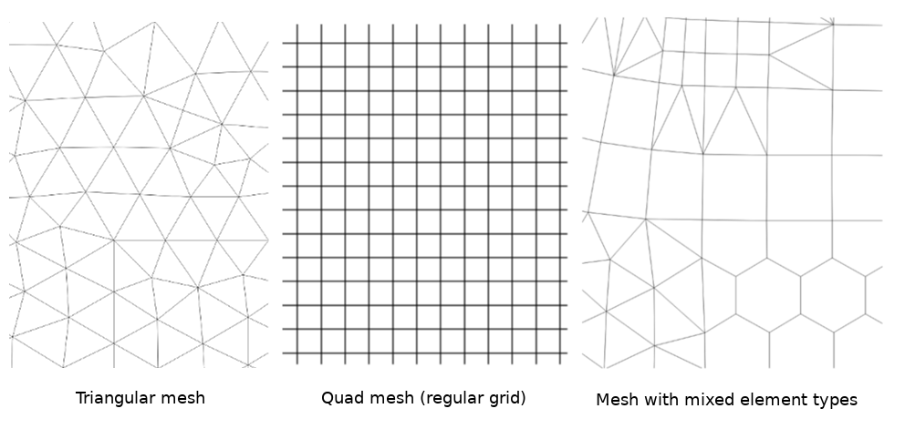
図 14.1 さまざまなメッシュタイプ
メッシュは空間構造に関する情報を提供します。さらに、メッシュはすべての頂点に値を割り当てるデータセット（グループ）を持つことができます。たとえば、次の図に示すように頂点が番号付けされた三角メッシュがあるとします：
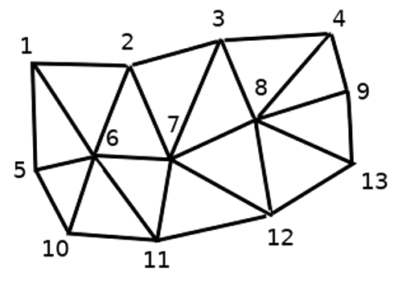
図 14.2 頂点に番号が付けられた三角形グリッド
各頂点は異なるデータセット（通常は複数の量）を格納でき、それらのデータセットは時間的な次元を持つこともできます。したがって、1つのファイルに複数のデータセットを含めることができます。
以下のテーブルは、メッシュデータセットに格納できる情報についての概念を示しています。テーブルの列はメッシュの頂点のインデックスを表し、各行は1つのデータセットを表します。データセットはさまざまなデータ型を持つことができます。この例の場合、テーブルはある特定の時間（t1、t2、t3）における地上10mの風速を格納しています。
同様に、メッシュデータセットは各頂点のベクトル値も格納できます。たとえば、与えられたタイムスタンプでの風向ベクトルは、
地上10m風速 |
1 |
2 |
3 |
... |
|---|---|---|---|---|
time=t1 における地上10m風速 |
17251 |
24918 |
32858 |
... |
time=t2 における地上10m風速 |
19168 |
23001 |
36418 |
... |
time=t3 における地上10m風速 |
21085 |
30668 |
17251 |
... |
... |
... |
... |
... |
... |
time=t1 における地上10m風向 |
[20,2] |
[20,3] |
[20,4.5] |
... |
time=t2 における地上10m風向 |
[21,3] |
[21,4] |
[21,5.5] |
... |
time=t3 における地上10m風向 |
[22,4] |
[22,5] |
[22,6.5] |
... |
... |
... |
... |
... |
... |
色を値に割り当て（ 単バンド疑似カラー 1 のラスタレンダリングと同様です）、メッシュトポロジに従って頂点間のデータが補間することでデータを可視化することができます。ある量が単純なスカラー値ではなく、2Dベクトル（例えば風向）であることはよくあります。そのような量については、方向を示す矢印を表示することが望ましいでしょう。
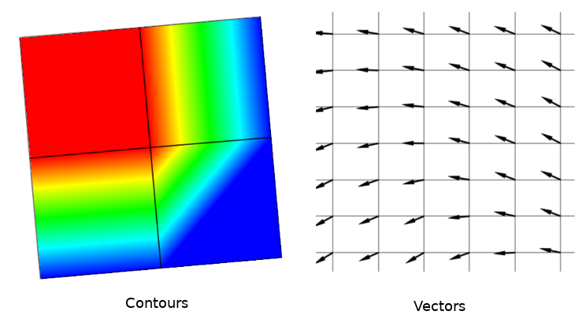
図 14.3 メッシュデータの可視化事例
14.2. サポートする形式
QGISは MDALドライバ を使用してメッシュデータにアクセスし、 様々なフォーマット をネイティブにサポートしています。QGISでメッシュレイヤを編集できるかどうかは、フォーマットとメッシュ構造タイプによります。
メッシュデータセットをQGISに読み込むには、 データソースマネージャ ダイアログで  メッシュ タブを使用します。詳細は、 メッシュレイヤを読み込む を参照してください。
メッシュ タブを使用します。詳細は、 メッシュレイヤを読み込む を参照してください。
14.3. メッシュデータセットのプロパティ
メッシュレイヤの レイヤプロパティ ダイアログは、レイヤのデータセットグループとそのレンダリング（アクティブなデータセットグループ、シンボロジ、2Dおよび3Dレンダリング）を管理するための一般的な設定を提供します。また、レイヤに関する情報も提供します。
レイヤプロパティ ダイアログにアクセスするには：
レイヤ パネル内において、レイヤをダブルクリックするか、レイヤを右クリックしてポップアップメニューから プロパティ... を選択する
レイヤを選択した状態で、 メニューを選ぶ
メッシュレイヤの レイヤプロパティ ダイアログには、以下のセクションがあります：
注釈
メッシュレイヤのプロパティの大半は、ダイアログの下部にある スタイル メニューを使用して .qml ファイルに保存したり、読み込んだりすることができます。詳細については、 カスタムスタイルを管理する を参照してください。
14.3.1. 情報プロパティ
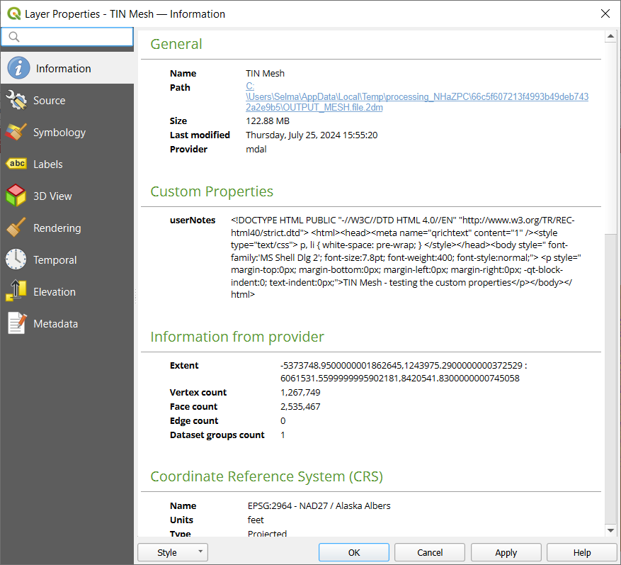
図 14.4 メッシュレイヤの情報プロパティ
 情報 タブは読み取り専用で、現在のレイヤの要約された情報やメタデータをさっと掴むことができる興味深い場所です。提供される情報には、以下のものがあります：
情報 タブは読み取り専用で、現在のレイヤの要約された情報やメタデータをさっと掴むことができる興味深い場所です。提供される情報には、以下のものがあります：
一般情報：プロジェクト内での名前、ソースへのパス、付随的なファイルのリスト、最終更新時刻、ファイルの大きさ、使用しているプロバイダ
カスタムプロパティは、そのレイヤに関する追加情報をアクティブなプロジェクトに保存するために使用されます。デフォルトのカスタムプロパティには、レイヤノート を含めることができます。PyQGIS、具体的には setCustomProperty() メソッドを使ってより多くのプロパティを作成・管理することができます。
プロバイダからの情報：領域、頂点の数、面の数、エッジ数、データセット数
座標参照系（CRS）：CRSの名前、単位、投影法、精度、参照（静的か動的か）
入力された メタデータ からの情報：アクセス、領域、リンク、連絡先、履歴など
14.3.2. ソースプロパティ
 ソース タブは、選択されたメッシュに関する以下のような基本的な情報を表示します：
ソース タブは、選択されたメッシュに関する以下のような基本的な情報を表示します：
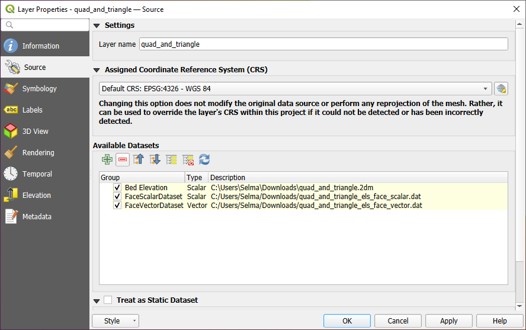
図 14.5 メッシュレイヤのソースプロパティ
レイヤ パネルで表示されるレイヤ名
座標参照系の設定：レイヤに 設定されたCRS を表示します。最近使用したCRSをドロップダウンリストから選ぶか、
 CRSの選択 ボタン（ 座標参照系セレクタ 参照）をクリックすることで、レイヤのCRSを変更できます。レイヤのCRSが間違っている場合か、CRSが何も設定されていない場合にのみ、この操作を行ってください。
CRSの選択 ボタン（ 座標参照系セレクタ 参照）をクリックすることで、レイヤのCRSを変更できます。レイヤのCRSが間違っている場合か、CRSが何も設定されていない場合にのみ、この操作を行ってください。利用可能なデータセット のフレームには、メッシュレイヤ内のすべてのデータセットグループ（とサブグループ）が、その種類や説明とともにツリービュー形式でリストされています。通常のデータセット（すなわちファイル内に保存されたデータ）と、仮想データセット（ オンザフライで計算されたもの ）の両方が表示されます。
Use the
 Assign Extra Dataset to Mesh button to add more
groups to the current mesh layer. You can add dataset group to a mesh layer with the same name,
but not from the same URI. Dataset group names are automatically renamed to
"Original Name_Number".
Assign Extra Dataset to Mesh button to add more
groups to the current mesh layer. You can add dataset group to a mesh layer with the same name,
but not from the same URI. Dataset group names are automatically renamed to
"Original Name_Number".Use
 Remove Extra Dataset from Mesh to remove additional datasets
groups from the mesh layer. Note that only dataset groups not associated with the
mesh source file can be removed.
Remove Extra Dataset from Mesh to remove additional datasets
groups from the mesh layer. Note that only dataset groups not associated with the
mesh source file can be removed. Collapse all and
Collapse all and  Expand
all the dataset tree, in case of embedded groups
Expand
all the dataset tree, in case of embedded groups一部のデータセットにしか興味がない場合、他のデータセットのチェックを外し、プロジェクト内で利用不可にできます。
グループ名をダブルクリックすると、データセットの名前を変更できます。
 Reset to defaults: checks all the groups and
renames them back to their original name in the provider.
Reset to defaults: checks all the groups and
renames them back to their original name in the provider.仮想データセットグループ上で右クリックすると、以下の操作が可能です：
プロジェクトから データセットグループを削除
データセットグループを別名で保存... ：ディスク上のファイルにサポートする任意の形式で保存します。新しいファイルはプロジェクト内で現在のメッシュレイヤに割り当てられます。
 Treat as static dataset グループにチェックを入れると、メッシュレイヤのレンダリング時に マップの時系列ナビゲーション プロパティを無視できます。アクティブなデータセットグループ（
Treat as static dataset グループにチェックを入れると、メッシュレイヤのレンダリング時に マップの時系列ナビゲーション プロパティを無視できます。アクティブなデータセットグループ（ 
 データセット タブで選択されたグループ）のそれぞれについて、次の設定ができます：
データセット タブで選択されたグループ）のそれぞれについて、次の設定ができます：none に設定：データセットグループは完全に表示されません
データセットを表示 ：例えば、時間とは無関係な「地盤高」データセットに使用します
extract a particular date time: the dataset matching the provided time is rendered and stays fixed during map navigation.
14.3.3. シンボロジプロパティ
シンボロジ ボタンをクリックすると、ダイアログを有効化します。シンボロジのプロパティは、複数のタブに分かれています：
14.3.3.1. データセット
データセット タブはレイヤにどのデータセットを使用するかの制御や設定を行う中心的な場所です。以下のアイテムがあります：
グループ ：メッシュデータセットで利用可能なグループと、以下のデータがあるかどうかを表示します：
データセット名の横にあるアイコンをクリックすると、表示するデータのグループとタイプの選択ができます。
選択データセットグループのメタデータ は、以下についての詳細を表示します：
メッシュ型：辺または面
データタイプ：頂点、辺、面またはボリューム
ベクトル型かどうか
メッシュレイヤのオリジナルの名前
単位（あれば）
選択したデータセットに対する 混合モード が利用可能です。
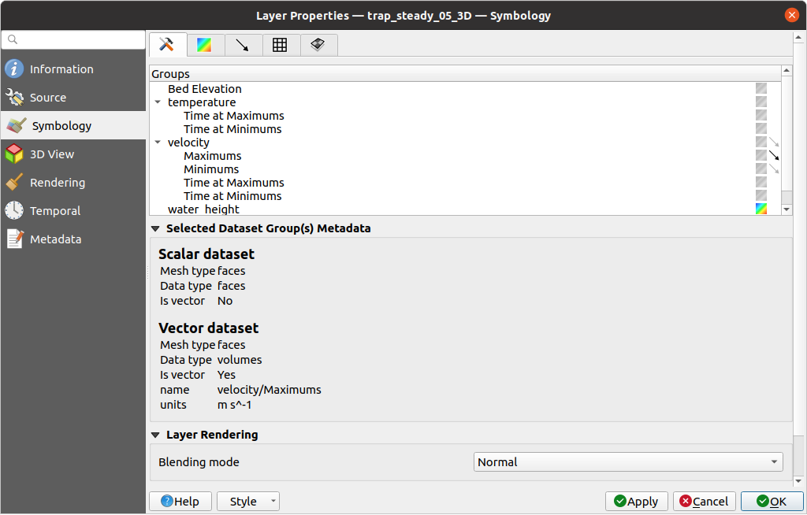
図 14.6 メッシュレイヤのデータセット
選択したベクトルやスカラーのグループには、次のタブを使用してシンボロジを適用できます。
14.3.3.2. 等高線シンボロジ
注釈
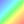 データセット タブでスカラーデータセットが選択されている場合にのみ、有効化することができます。
等高線（Contours） タブでは、以下の 図 14.7 に示すように、選択したグループに対するコンター表示の現在の可視化オプションの確認と変更ができます。
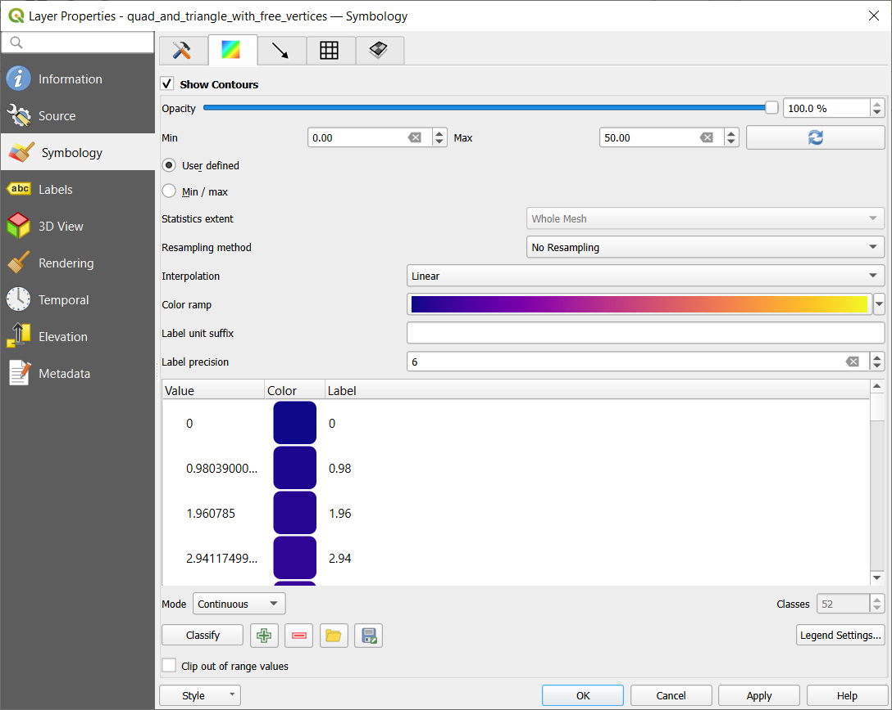
図 14.7 メッシュレイヤのコンタースタイルの設定
1Dのメッシュに対しては、辺の ストローク幅 の設定があります。ストローク幅はデータセット全体で一定のサイズとすることも、ジオメトリに沿って変化させる（詳細は 補間された線のレンダラー を参照）こともできます。
2Dメッシュタイプの場合は、スライダーやスピンボックスを使用して現在のグループの 不透明度 が設定できます。
 User Defined allows you to enter the range of values you want to represent on the current group:
use Load to fetch the min and max values of the current group
or enter custom values if you want to exclude some.
User Defined allows you to enter the range of values you want to represent on the current group:
use Load to fetch the min and max values of the current group
or enter custom values if you want to exclude some.Select
Min/Max to set the renderer's minimum and maximum values based on the chosen extent.Statistics extent can be Whole mesh, Current canvas or Updated canvas. Updated canvas means that min/max values used for the rendering will change with the canvas extent (dynamic stretching).
2D / 3Dメッシュの場合、 リサンプリング方法 で 隣接平均 を使用すると、周囲の頂点の値を面に（あるいは周囲の面から頂点に）補間できます。データセットが頂点で定義されているか（あるいは面で定義されているか）に応じて、QGISはこの設定を なし （面定義の場合は 隣接平均 ）にデフォルトで設定することで、頂点上の値を使用してデフォルトのレンダリングが滑らかになるようにします。
カラーランプシェーダ のクラス分類を使用して、データセットをクラス分けできます。
14.3.3.3. ベクタシンボロジ
注釈
The Vectors tab can be activated only if a
vector dataset has been selected in the Datasets tab.
Click on the Vectors icon on the right side of the
Datasets tab.
ベクタ タブでは、 図 14.8 に示すように、選択したグループに対するベクトル表示の現在の可視化オプションの確認と変更ができます。
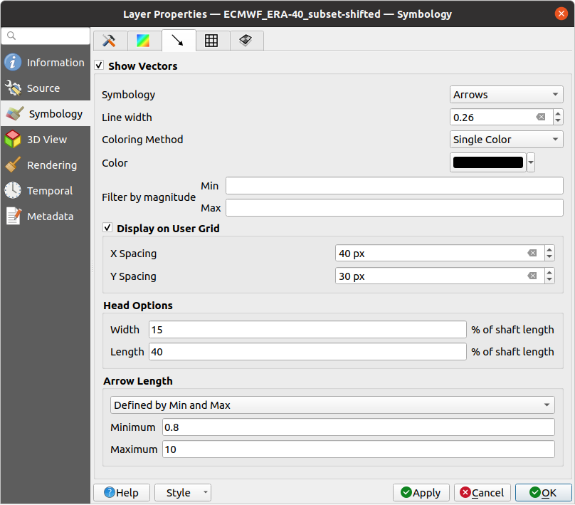
図 14.8 矢印を使用したメッシュレイヤのベクトルスタイルの設定
メッシュのベクタデータセットは、さまざまな種類の シンボロジ を使用してスタイル設定ができます：
矢印 ：ベクトルは、生のデータセットでの定義位置（つまり、ノード上または要素の中心）と同じ位置、またはユーザー定義のグリッド上（したがって、均等に分布します）に矢印で表現されます。矢印の長さは生データで定義されている矢印の大きさに比例しますが、さまざまな方法でスケーリングできます。
流線 ：ベクトルは開始点から発生する流線で表現されます。流線の発生点はメッシュの頂点やユーザー定義のグリッド、あるいはランダムとすることができます。
トレース ：流線のより良いアニメーションです。これは、水中にランダムに砂（トレーサー）を投げ入れ、それがどのように流れるかを見るような効果が得られます。
Wind barbs: vectors are represented with wind barbs, a common way to represent wind speed and direction.
以下の表に示すように、利用可能なプロパティは選択したシンボロジによって異なります。
Label, Description and Properties |
矢印 |
流線 |
トレース |
Wind Barbs |
|---|---|---|---|---|
Line width: Width of the vector representation |
|
|
|
|
Coloring method:
|
|
|
|
|
Filter by magnitude: Only vectors whose length for the selected dataset falls between a Min and Max range are displayed |
|
|
|
|
Display on user grid: Places the vector on a grid with custom X spacing and Y spacing and interpolates their length based on neighbours |
|
|
|
|
Head options: Length and Width of the arrow head, as a percentage of its shaft length |
|
|||
Arrow length:
|
|
|||
Streamlines seeding method:
|
|
|||
Particles count: The amount of "sand" you want to throw into visualisation |
|
|||
Max tail length: The time until the particle fades out |
|
|||
Wind Barbs:
|
|
14.3.3.4. レンダリング
レンダリング タブには、QGISが提供するメッシュ構造の表示とカスタマイズの機能があります。表示のための 線幅 と 線の色 を設定できます：
1Dメッシュの辺
2Dメッシュの場合：
ネイティブメッシュレンダリング ：レイヤのオリジナルの面と辺を表示する
三角メッシュレンダリング ：辺を追加して、面を三角形として表示する
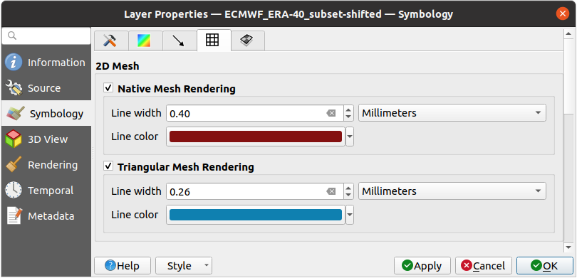
図 14.9 2Dメッシュのレンダリング
14.3.3.5. 多層メッシュ平均化法
3Dレイヤードメッシュは、2D非構造メッシュを垂直座標によって垂直方向（ レベル ）に押し出したものが複数積み重なったもので構成されます。頂点と面は、各垂直レベルで同じトポロジーを持ちます。値は通常、ベースとなる2Dメッシュの上に規則的に積み重ねられたボリュームに保存されます。2Dキャンバス上でこれを可視化するためには、ボリューム（3D）の値をメッシュレイヤで表示可能な面（2D）上の値に変換する必要があります。 多層メッシュ平均化法（Stacked mesh averaging method） は、これを処理するためのさまざまな平均化 / 補間方法を提供します。
You can select the method to derive the 2D datasets and corresponding parameters (level index, depth or height values). For each method, an example of application is shown in the dialog but you can read more on the methods at https://fvwiki.tuflow.com/Depth_Averaging_Results.
14.3.4. ラベルプロパティ
The  Labels tab offers you dynamic labeling of mesh vertices
and native mesh faces based on geometric properties and custom expressions. This
dialog can also be accessed from the Layer Styling panel.
Labels tab offers you dynamic labeling of mesh vertices
and native mesh faces based on geometric properties and custom expressions. This
dialog can also be accessed from the Layer Styling panel.
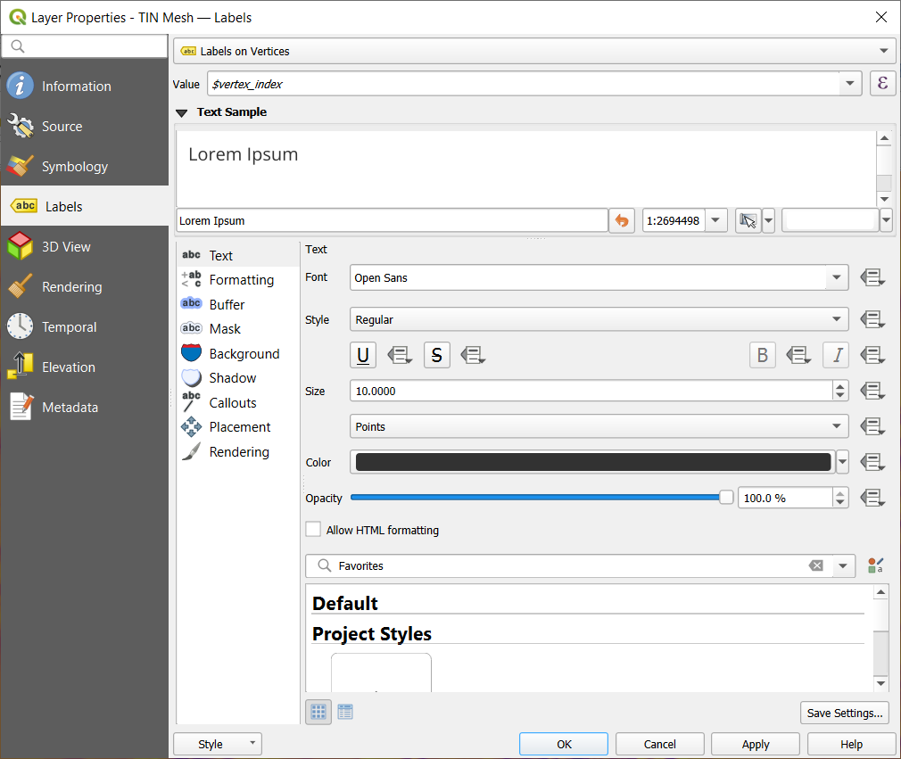
図 14.10 Mesh Labels Properties
Choose the labeling method from the drop-down list. Available methods are:
No labels: the default value, showing no labels from the layer.
- Labels on vertices: labels the mesh vertices as a point feature.
- Labels on faces: labels the mesh faces as a polygon feature.
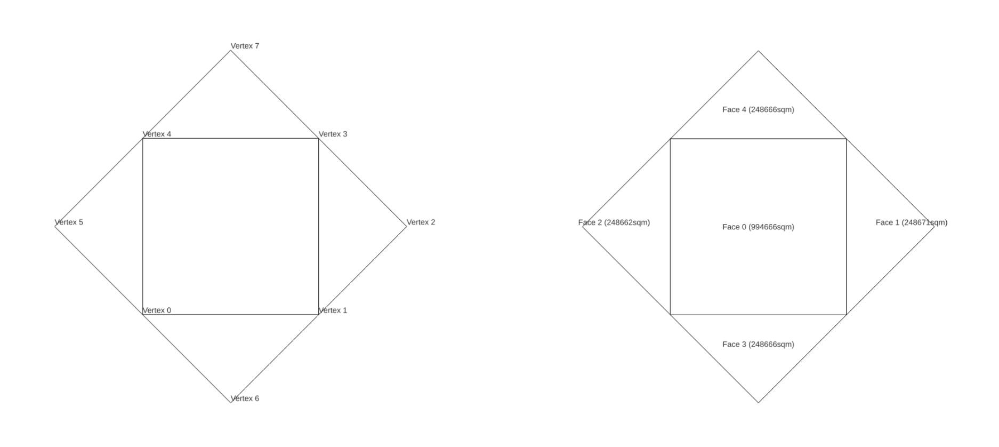
図 14.11 Mesh Labeling methods
Once the labeling method has been selected, open  Expression dialog
and choose a mesh function.
You can combine meshes functions with other functions from the list
to modify the label.
Expression dialog
and choose a mesh function.
You can combine meshes functions with other functions from the list
to modify the label.
以下は、様々なタブの下でラベルをカスタマイズするために表示されるオプションです。


各プロパティの設定方法は、 ラベルの設定 にあります。
14.3.5. 3Dビュープロパティ
メッシュレイヤは頂点のZ値に基づいて 3Dマップビューの地形 としても使用できます。  3Dビュー プロパティタブから、メッシュレイヤのデータセットを同じ3Dビューでレンダリングすることもできます。従って、頂点の鉛直成分はデータセット値（例えば水面の標高）と等しいように設定することができ、メッシュのテクスチャは他のデータセット値（例えば速度）をカラーランプシェーダでレンダリングするように設定できます。
3Dビュー プロパティタブから、メッシュレイヤのデータセットを同じ3Dビューでレンダリングすることもできます。従って、頂点の鉛直成分はデータセット値（例えば水面の標高）と等しいように設定することができ、メッシュのテクスチャは他のデータセット値（例えば速度）をカラーランプシェーダでレンダリングするように設定できます。
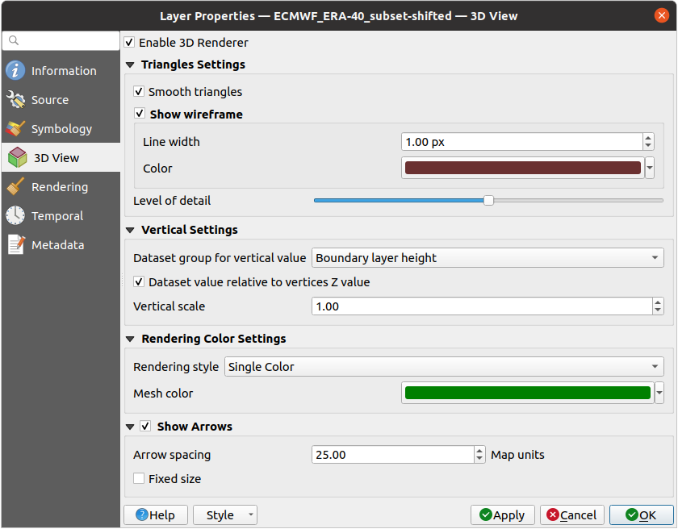
図 14.12 メッシュデータセットの3Dプロパティ
 3Dレンダラを有効にする にチェックを入れると、以下のプロパティを編集できます：
3Dレンダラを有効にする にチェックを入れると、以下のプロパティを編集できます：
三角形設定 では、
スムース三角形 ：3Dレンダリングを改善するため、隣接する三角形の間の角をスムージングする
ワイヤフレームを表示 ： 線幅 と 色 を設定可能
詳細水準（Level of detail） ：レンダリングするメッシュレイヤをどれだけ 簡素化 するかを制御します。スライダーの右端は元のメッシュで、左に行くほどメッシュレイヤは簡略化され、ディテールがより少なくなります。このオプションは、 レンダリング タブで メッシュの簡素化 オプションを有効にした場合のみ利用可能です。
垂直設定 は、レンダリングされた三角形の頂点の垂直成分のふるまいを制御します:
垂直方向のデータセットグループ ：メッシュの垂直成分に使用するデータセットグループ
- Z値に対する相対値 ：データセットの値を絶対Z座標とみなすか、または頂点のネイティブなZ値からの相対座標とみなすか
鉛直スケール ：データセットのZ値に適用するスケーリング係数
レンダリング色設定 ： レンダリングスタイル は、 等高線シンボロジ で設定したカラーランプシェーダ（ 2D等高線カラーランプシェーダ ）に基づく色、または、 メッシュの色 に関連付けられた 単一色
矢印を表示 ： ベクトルの2Dレンダリング で使用されるデータセットグループと同じデータセットに基づいて、メッシュレイヤデータセットの3Dエンティティ上に矢印を表示します。矢印は2Dの色設定を使って表示されます。また、 矢印の間隔 の定義や、 固定サイズ とするか大きさでスケーリングするかを定義できます。矢印は重なり合うことができないため、この矢印の間隔設定は矢印の最大サイズも定義します。
14.3.6. レンダリングプロパティ
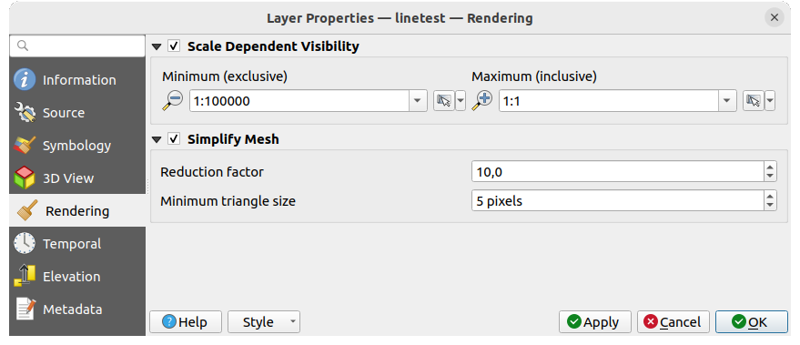
図 14.13 メッシュレンダリングのプロパティ
縮尺に応じた表示設定 グループボックスでは、 最大縮尺 と 最小縮尺 を設定し、メッシュ要素を見せる縮尺の範囲を定義することができます。この範囲の外では隠されます。 現在のキャンバススケールを使う ボタンを使用すると、現在のマップキャンバススケールを可視範囲の境界として使用することができます。詳しくは 表示縮尺セレクタ を参照してください。
現在のキャンバススケールを使う ボタンを使用すると、現在のマップキャンバススケールを可視範囲の境界として使用することができます。詳しくは 表示縮尺セレクタ を参照してください。
注釈
レイヤの縮尺に応じた表示は、レイヤ パネルからも有効にすることもできます: レイヤを右クリックし、コンテキストメニューから レイヤの縮尺表示を設定 を選択します。
メッシュレイヤは数百万の面を持つことがあるため、レンダリングには非常に時間がかかることがあります。これは特に、面が小さすぎて表示はできないものの、全ての面がビュー内にある場合に顕著です。レンダリングを高速化するためにメッシュレイヤを簡素化すると、さまざまな 詳細水準（level of detail） を表す1つまたは複数のメッシュが生成され、QGISにどの詳細水準のメッシュレイヤをレンダリングさせるかを選択できます。簡素化されたメッシュは三角形の面のみとなることに留意してください。
 レンダリング タブで メッシュの簡素化 にチェックを入れると、以下が設定できます：
レンダリング タブで メッシュの簡素化 にチェックを入れると、以下が設定できます：
削減係数 ：簡素化されたメッシュの連続するレベルの生成を制御します。例えば、ベースメッシュに5百万個の面があり、削減係数が10の場合、最初の簡素化されたメッシュはおよそ500,000個の面、2番目は50,000個の面、3番目は5000個の面、といった具合になります。削減係数が大きいほどより単純なメッシュ（つまり、より大きなサイズの三角形）に早く到達し、詳細水準の数も少なくなります。
最小三角形サイズ ：表示が許可される三角形の平均サイズ（ピクセル単位）です。メッシュの平均サイズがこの値よりも小さい場合には、より低い詳細水準のメッシュのレンダリングに切り替わります。
14.3.7. 時系列プロパティ
 時系列 タブは、時間経過に伴うレイヤのレンダリングを制御するオプションを提供します。これは、有効化されたデータセットグループの時系列値を動的に表示できるようになります。このような動的なレンダリングには、マップキャンバスで 時系列ナビ を有効にする必要があります。
時系列 タブは、時間経過に伴うレイヤのレンダリングを制御するオプションを提供します。これは、有効化されたデータセットグループの時系列値を動的に表示できるようになります。このような動的なレンダリングには、マップキャンバスで 時系列ナビ を有効にする必要があります。
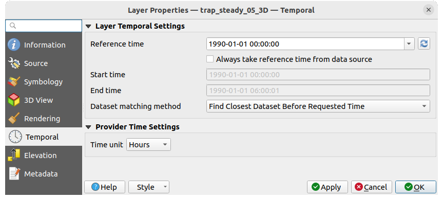
図 14.14 メッシュの時系列プロパティ
レイヤ時間設定
参照時間 は、データセットグループの絶対的な日時としての基準です。デフォルトでは、QGISはソースレイヤを解析し、レイヤのデータセットグループ内の最初の有効な参照時間を返します。これが利用できない場合は、この値はプロジェクトの時間範囲によって設定されるか、現在の日付にフォールバックされます。考慮すべき 開始時刻 と 終了時刻 は、データセット内部のタイムスタンプのステップに基づいて計算されます。
カスタム 参照時間 （そして時間範囲）を設定すること、
プロバイダから再読み込み ボタンを使って変更を元に戻すことができます。 常にデータソースから参照時間を取得 をチェックすると、レイヤーが再読み込みされたりプロジェクトが再開されたりするたびに、時間プロパティがファイルから更新されます。データセット検索方法 ：指定された時間に表示するデータセットを決定します。選択肢は、 時間内に最も近いデータセットを見つける と 時間内に最も近いデータセットを見つける（前後） の2つです。
プロバイダ時間設定
時間単位 は、元データから抽出されるか、ユーザーが定義します。この値は、マップの時系列ナビゲーションの際に、メッシュレイヤの速度をプロジェクト内の他のレイヤと揃えるために使用されます。サポートしている単位は、 秒 、 分 、 時 、および 日 です。
14.3.8. 標高プロパティ
 標高 タブには、 3Dマップビュー と 2Dマップビュー でのレイヤの標高プロパティと、 断面図ツール での外観を制御するオプションがあります。具体的にはデータセットから得た高さを解釈する方法を設定できます:
標高 タブには、 3Dマップビュー と 2Dマップビュー でのレイヤの標高プロパティと、 断面図ツール での外観を制御するオプションがあります。具体的にはデータセットから得た高さを解釈する方法を設定できます:
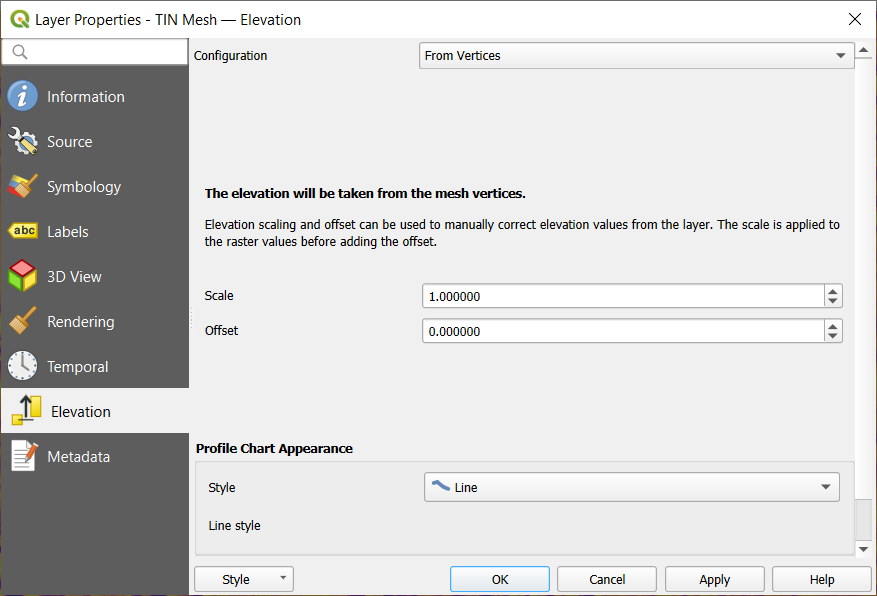
図 14.15 メッシュ標高プロパティ
From vertices: how the mesh layer vertices Z values should be interpreted as terrain elevation. You can apply a Scale factor and an Offset. This setting is available for 3D map view and profile tool charts.
固定標高範囲: メッシュレイヤは固定の標高範囲に関連付けされます。このモードは、レイヤが単一の固定標高か標高値の範囲 (スライス)を持つ場合に適用できます。範囲が指定されている場合、メッシュ値はこの範囲を超えて押し出されます。レイヤに対して標高範囲を 下限 及び 上限 の値で設定でき、下限上限の扱い で下限値及び／又は上限値を含むか含まないか (inclusive か exclusiveか) を指定することができます。有効にした場合、レイヤの範囲がマップのZ範囲に含まれているときだけ、標高でフィルタされた2Dマップ に表示されます。
Fixed Elevation Range Per Group: each group in the mesh layer is associated with a fixed elevation range. This mode can be used when a layer has elevation data exposed through different dataset groups. This feature is exposed as a user-editable table for dataset groups with lower and upper values. You can either populate the lower and upper values manually or use an
Expression to auto-fill all group values based on an expression.
When enabled, the layer will be filtered in the 2D map view,
displaying only values within the map filter ranges.
In 3D map view or profile tool charts,
the full extent of the layer will be displayed, ignoring the filtering.断面図の外観: 断面図にあるメッシュ要素の標高のレンダリングを制御します。断面図の スタイル は次のように設定できます:
14.3.9. メタデータプロパティ
 メタデータ タブには、レイヤに関するメタデータレポートの作成・編集オプションがあります。詳細は メタデータ を参照してください。
メタデータ タブには、レイヤに関するメタデータレポートの作成・編集オプションがあります。詳細は メタデータ を参照してください。
14.4. Exploring mesh datasets
To identify mesh elements and their associated datasets, use the
 Identify Features tool from the Attributes toolbar.
Click on a mesh element in the map canvas and the Identify Results panel
opens, displaying information about the mesh layer and the identified element. The panel shows:
Identify Features tool from the Attributes toolbar.
Click on a mesh element in the map canvas and the Identify Results panel
opens, displaying information about the mesh layer and the identified element. The panel shows:
Layer name
Active dataset groups (scalar and/or vector) for the clicked element will be displayed first. On the other hand, inactive dataset groups are shown afterwards. For each group, the following derived information may also be shown, if applicable:
Source of the dataset (the file where it is stored).
Time step of the dataset value being displayed. For non-temporal dataset groups, this field remains empty.
Vector x-component and Vector y-component values for vector datasets.
Please note that when temporal navigation is disabled, the results only contain values from the static dataset groups defined.
Geometry information shows the coordinates of the clicked point and may contain derived information in the following:
Centroid of the face.
Coordinates of a snapped vertex (if the click was snapped to a vertex).
Center of a snapped edge (if the click was snapped to an edge).
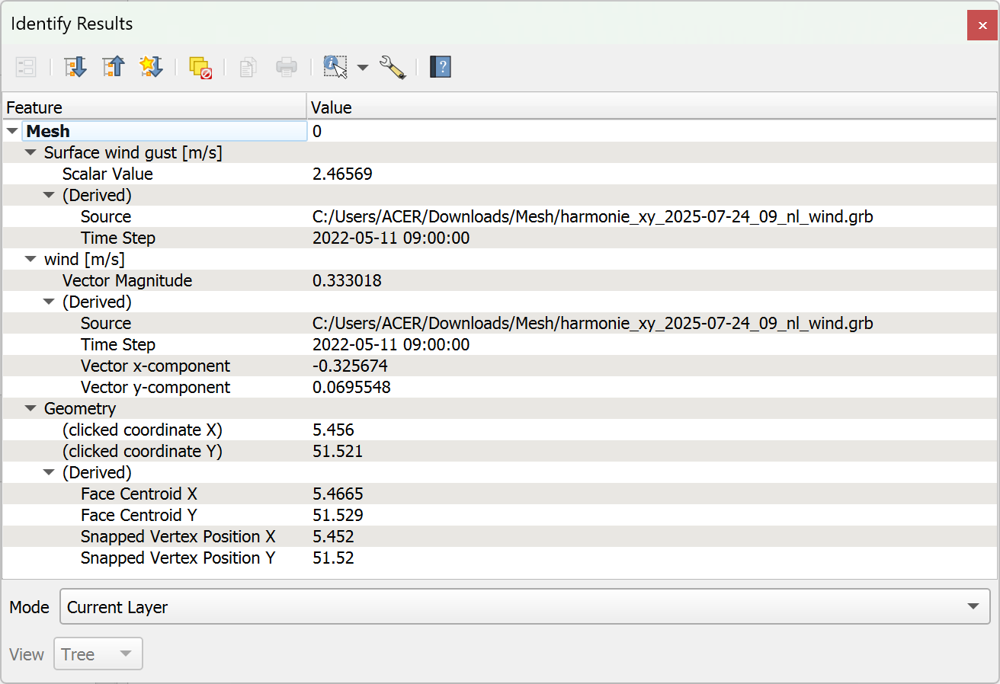
図 14.16 Mesh Identify Results panel
14.5. メッシュレイヤを編集する
QGISでは、ゼロからまたは既存のメッシュレイヤを元に メッシュレイヤを作成する ことができます。新しいレイヤのジオメトリを作成/変更することができ、後からデータセットを割り当てることができます。既存のメッシュレイヤを編集することもできます。編集にはフレームのみのレイヤが必要なため、初めに関連するデータセットを削除するか（必要であれば利用できることを確認してください）、（ジオメトリのみの）レイヤのコピーを作る必要があります。
注釈
QGIS does not allow to digitize edges on mesh layers. Only vertices and faces are mesh elements that can be created. Also not all supported mesh formats can be edited in QGIS (see permissions).
14.5.1. メッシュデジタイジングツールの概要
ベースメッシュレイヤ要素を操作・編集するには、以下のツールが利用できます。
Label |
目的 |
場所 |
|---|---|---|
|
全レイヤまたは選択レイヤを同時に保存・ロールバック・編集キャンセルするツールへのアクセス |
デジタイジング ツールバー |
|
レイヤの編集モードをオン／オフする |
デジタイジング ツールバー |
|
レイヤに行なった変更を保存する |
デジタイジング ツールバー |
|
最後の変更を元に戻す - Ctrl+z |
デジタイジング ツールバー |
|
最後に取り消した操作をやり直す - Ctrl+Shift+Z |
デジタイジング ツールバー |
|
高度なデジタイズパネル をオン／オフする |
高度なデジタイズ ツールバー |
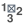 |
メッシュ要素のインデックスを再作成し、番号を付け直して最適化する |
メッシュ メニュー |
頂点と面を選択／作成する |
メッシュデジタイジング ツールバー |
|
描いたポリゴンに重なる頂点と面を選択する |
メッシュデジタイジング ツールバー |
|
式を使って頂点と面を選択する |
メッシュデジタイジング ツールバー |
|
選択された頂点の座標を変更する |
メッシュデジタイジング ツールバー |
|
線形ジオメトリを使用して面を分割し、Z値を制約する |
メッシュデジタイジング ツールバー |


14.5.2. Z値割り当てロジックを探検する
メッシュレイヤを編集モードにすると、マップキャンバスの右上に 頂点のZ値 ウィジェットが開きます。デフォルトでは、その値は タブで設定された デフォルトのZ値 に対応します。選択された頂点がある場合、ウィジェットは選択された頂点の平均Z値を表示します。
編集中は、新しい頂点に 頂点のZ値 が割り当てられます。カスタム値を設定することもできます。ウィジェットを編集して Enter を押すと、デフォルト値が上書きされ、デジタイジング処理でこの新しい値が使用されます。ウィジェットの  アイコンをクリックすると、その値がオプションのデフォルト値にリセットされます。
アイコンをクリックすると、その値がオプションのデフォルト値にリセットされます。
14.5.2.1. 割り当て規則
This is configured in the drop-down menu of the Digitize mesh elements tool as New vertex Z value option. Following methods are available:
Method |
説明 |
|---|---|
Project terrain |
Z value is always taken or calculated from the project reference terrain.
|
Z widget |
Z value is taken from the Vertex Z value widget or the Advanced Digitizing Panel Z widget (if it is in Locked state). |
Prefer mesh, then Z widget |
Interpolates the Z value from the active mesh layer if the vertex is on an edge or face, otherwise falls back to the Vertex Z value or Advanced Digitizing Panel Z widget (if it is in Locked state). |
Prefer mesh, then terrain |
Interpolates the Z value from the active mesh layer if the vertex is on the edge or face, otherwise uses the project reference terrain value. |
The following detailed logic describes the behavior of the Prefer mesh, then Z widget strategy.
頂点の作成 |
Vertices selected? |
割り当てた値の元 |
割り当てられたZ値 |
|---|---|---|---|
"Free" vertex, not connected to any face or edge of a face |
No |
頂点のZ値 |
デフォルトまたはユーザー定義 |
高度なデジタイズパネル （ z ウィジェットが |
|
||
Yes |
頂点のZ値 |
Average of the selected vertices or user-defined |
|
辺にある頂点 |
--- |
メッシュレイヤ |
辺の頂点からの内挿 |
面上の頂点 |
--- |
メッシュレイヤ |
面の頂点からの内挿 |
2Dベクタ地物にスナップした頂点 |
--- |
頂点のZ値 |
デフォルトまたはユーザー定義 |
3Dベクタ頂点にスナップした頂点 |
--- |
ベクタレイヤ |
頂点 |
3Dベクタセグメントにスナップした頂点 |
--- |
ベクタレイヤ |
ベクタセグメントに沿った内挿 |

{kind=link}
{kind=link}
{kind=link}
{kind=link}
{kind=link}
{kind=link}
{kind=link}
{kind=link}
{kind=link}
{kind=link}
{kind=link}
{kind=link}
{kind=link}
注釈
高度なデジタイズパネル が有効で、メッシュ要素が選択されていない場合、 頂点のZ値 ウィジェットは非アクティブになります。前者の z ウィジェットがZ値の割り当てを行います。
14.5.2.2. 既存の頂点のZ値を変更する
頂点のZ値を変更するのに最も簡単な方法は:
1つまたは複数の頂点を選択します。頂点のZ値 ウィジェットは選択範囲の平均の高さを表示します。
ウィジェットの値を変更します。
Enter を押します。入力した値が頂点に割り当てられ、次の頂点のデフォルト値になります。
頂点のZ値を変更するもう一つの方法は、Z値の能力を持つベクタレイヤ地物の上に頂点を移動してスナップすることです。複数の頂点が選択されている場合は、この方法でZ値を変更することはできません。
Transform mesh vertices ダイアログでは、選択した頂点のZ値を（X座標またはY座標とともに）変更することもできます。
14.5.3. メッシュ要素を選択する
To select mesh elements, you can use the following tools:
Digitize Mesh Elements to select different mesh elements, see more at メッシュ要素をデジタイズ を使う.
Select Mesh Elements by Polygon to select different mesh elements by polygon, see more at ポリゴンによるメッシュ要素選択 を使う.
Select Mesh Elements by Expression to select different mesh elements by expression, you can choose to Select by vertices or Select by faces, see more at 式によるメッシュ要素選択.
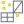
Select Isolated Vertices to select all vertices that are not part of any mesh face.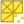
Select All Vertices to select all vertices of the mesh layer.
{kind=link}
{kind=link}
14.5.3.1. メッシュ要素をデジタイズ を使う
メッシュ要素をデジタイズ ツールをアクティブにします。要素にカーソルを合わせるとハイライトされ、選択できるようになります。
頂点の上でクリックするとそれが選択されます。
面や辺の中心にある小さな四角をクリックすると、それが選択されます。つながっている頂点も選択されます。逆に、辺や面のすべての頂点を選択すると、その要素も選択されます。
重なっている要素を選択するには矩形をドラッグします（選択された面にはすべての頂点が含まれます）。完全に含まれる要素だけを選択したい場合は Alt キーを押します。
選択範囲に要素を追加するには、要素を選択した状態で Shift を押します。
要素を選択範囲から外すには Ctrl を押して再度選択します。選択が解除された面は、その頂点の選択も解除されます。
14.5.3.2. ポリゴンによるメッシュ要素選択 を使う
ポリゴンによるメッシュ要素選択 `ツールをアクティブにする:
メッシュジオメトリの上にポリゴンを描きます（左クリックで頂点を追加、Backspace で最後の頂点を元に戻す、Esc でポリゴンを中止し、右クリックで有効にする）。部分的に重なっている頂点や面が選択されます。完全に含まれる要素のみを選択したい場合は、描画中に Alt キーを押してください。
ベクタレイヤの地物のジオメトリ上で右クリックし、ポップアップするリストから選択すると、メッシュレイヤの頂点や面が部分的に重なっていても選択されます。完全に含まれる要素のみを選択するには、描画中に Alt を使用します。
選択範囲に要素を追加するには、要素を選択した状態で Shift を押します。
選択範囲から要素を削除するには、選択ポリゴンの上に描画しながら Ctrl を押します。
14.5.3.3. 式によるメッシュ要素選択
メッシュ要素を選択するもう一つのツールは 式によるメッシュ要素選択 です。これを押すと、ツールの 式によるメッシュ要素選択ダイアログ が開き、次のことができます:
選択する方法を選ぶ:
頂点による選択: 入力された式を頂点に適用し、合致したものとそれに関連する辺/面を返します
面による選択: 入力された式を面に適用し、合致したものとそれに関連する辺/頂点を返します
選択式を記述する。Meshesグループ で利用可能な関数は、選択された方法に応じてフィルタリングされます。
クエリを実行するには、以下の選択範囲の動作を設定し、押します:
 選択: レイヤ内の既存の選択範囲を置き換える
選択: レイヤ内の既存の選択範囲を置き換える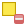
現在の選択範囲から除去する
{kind=link}
{kind=link}
14.5.4. メッシュ要素を変更する
14.5.4.1. 頂点を追加する
メッシュレイヤに頂点を追加するには:
A Vertex Z value widget is always available on the top right corner of the map canvas during digitizing. It allows setting or overriding the Z coordinate assigned to new vertices, depending on the selected Z value assignment method.
You can choose other method for assigning Z values to new vertices from the drop-down menu in the Digitize mesh elements tool.
ダブルクリックします:
面の外：「フリー頂点」、つまりどの面にもリンクされていない頂点を追加します。この頂点はレイヤが編集モードの時、赤い点で表示されます。
既存の面の辺: 辺に頂点を追加し、触れた面を新しい頂点に接続された三角形に分割します。
面の内側：新しい頂点と周囲の頂点と結んだ三角形に面を分割します。
With the Refine neighboring faces when adding vertices option enabled in the Digitize mesh elements button drop-down menu, a check is applied to triangular faces that share at least one vertex with the face the new vertex is added to. If their edges do not satisfy Delaunay triangulation rules, they are flipped accordingly.
14.5.4.2. 面を追加する
メッシュレイヤに面を追加するには:
マップキャンバスの右上に 頂点のZ値 ウィジェットが現れます。この値を後続の頂点に割り当てたいZ座標に設定する。
Hover over a vertex and click the small triangle that appears next to it.
カーソルを次の頂点の位置に移動する; 既存の頂点にスナップするか、左クリックして新しい頂点を追加します。
Proceed as above to add as many vertices as you wish for the face. Press Backspace button to undo the last vertex.
マウスを動かしている間、面の形状を示すラバーバンドが表示されます。ラバーバンドが緑で表示されている場合、その面は有効であり、右クリックでメッシュに追加できます。赤で表示されている場合、その面は有効ではなく（例えば、自己交差している、既存の面や頂点と重なっている、穴を作っているなど）、追加できません。いくつかの頂点を元に戻し、ジオメトリを修正する必要があります。
Esc を押すと面のデジタイジングを中止します。
右クリックして面を検証する。
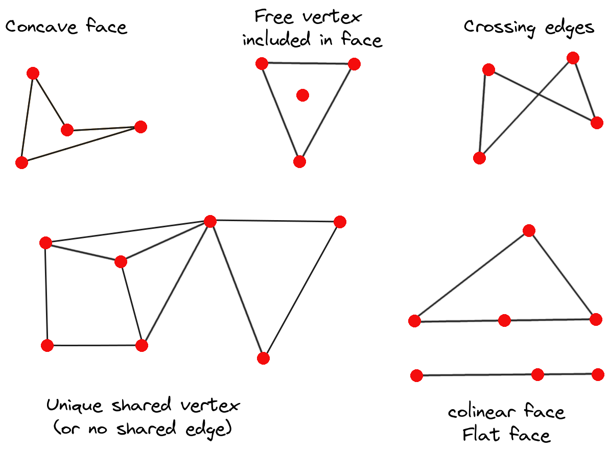
図 14.17 無効なメッシュの例
14.5.4.3. メッシュ要素を削除する
メッシュ要素をデジタイズ ツールを有効にする
右クリックして選択する:
選択した頂点を削除し、穴を埋める または Ctrl+Del を押す: 頂点及びリンクされた面を削除し、隣接する頂点から三角形を作って穴を埋めます
選択した頂点を削除し、穴を埋めない または Ctrl+Shift+Del を押す：頂点及びリンクされた面を削除し、穴を埋めない
選択した面を削除する 又は Shift+Del を押す: 面を削除しますが頂点は残します
これらのオプションには、アイテムを選択しなくてもカーソルを合わせてコンテクストメニューからアクセスできます。
14.5.4.4. メッシュ要素を移動する
メッシュレイヤの 頂点と面を移動するには:
メッシュ要素をデジタイズ ツールを有効にする
要素の移動を開始するには、頂点または面/辺の重心をクリックします
カーソルを目的の位置に移動します（ベクタ地物へのスナップがサポートされています）。
新しい位置が 無効メッシュ を生成しない場合、移動した要素は緑色で表示されます。この位置でもう一度クリックすると解除されます。頂点がすべて選択されている面は平行移動され、それに応じて隣接する面の形も変更されます。
14.5.4.5. メッシュの頂点を変形する
頂点座標の変換 ツールは、式を使ってX、Y及び／又はZ座標を編集することで、頂点を移動させるより高度な方法を提供します。
座標を編集したい頂点を選択します
頂点座標の変換 を押します。ダイアログが開き、選択された頂点の数が表示されます。選択範囲から頂点を追加したり削除したりすることができます。
変更したいプロパティに応じて、 X座標、 Y座標、 Z値 のいずれかをチェックする必要があります。
次に、数値または式（
式ダイアログ を使用）でターゲット位置をボックスに入力しますWith the Import Coordinates of the Selected Vertex pressed, the X, Y and Z boxes are automatically filled with its coordinates whenever a single vertex is selected. You can adjust Z value by using
Get the Z value from the project terrain button
and in that case the Z box is deactivated.
A convenient and quick way to adjust vertices individually.Preview Transform を押すと、頂点の新しい位置がシミュレートされ、変形したメッシュがプレビューされます。
プレビューが緑色であれば、変形されたメッシュは有効であり、変形を適用することができます。
プレビューが赤色の場合、変形されたメッシュは無効で、修正されるまで変形を適用できません。
変形を適用 を押して、選択した頂点の座標を変更します。
{kind=link}
14.5.4.6. メッシュジオメトリを整形する
辺マーカー
メッシュ要素をデジタイズ がアクティブなときに辺の上にカーソルを置くと、辺がハイライトされ、その辺を操作することができます。コンテキストによって、以下のマーカーが使用できます:
辺の中点にある 正方形: クリックすると、両端の頂点が選択されます。
両側の二つの面がマージできるときの 十字: クリックするとエッジが削除され、それらの面がマージされます。
辺が2つの三角形の間にある場合は、円: クリックすると辺が反転します。つまり、その辺を面の他の2つの「自由な」頂点に接続します。
選択されたジオメトリで強制 ツール
選択されたジオメトリで強制 ツールは、ラインジオメトリを使用してブレークラインを適用する高度な方法を提供します。ブレークラインはメッシュにラインに沿った辺を強制的に持たせます。操作が完了すると、ブレークラインは永続的なものとは見なされないことに注意してください; 結果として生じる辺はもう制約として機能せず、他の辺のように変更することができます。これは、例えば、川の堤防や道路の盛土の境界のように、正確な線でメッシュレイヤーを局所的に修正するために使うことができます。
次のいずれかで「強制する線」として使用するジオメトリを示します:
マップキャンバスのライン又はポリゴン地物から選択: ベクタ地物上で右クリックし、コンテキストメニューのリストから選択します。
メッシュ枠上に引かれた仮想の線: 左クリックで頂点を追加し、右クリックで検証します。頂点のZ値は 頂点のZ値 ウィジェット、または 高度なデジタイズパネル がオンの場合は z ウィジェットで設定します。線がメッシュの頂点や3Dベクトル地物の頂点やセグメントにスナップされた場合、新しい頂点はスナップされた要素のZ値をとります。
選択されたジオメトリで強制 ツールのドロップダウンメニューから設定できるオプションに依存する方法で、ラインジオメトリまたはポリゴンの境界に重なるメッシュ面が影響を受けます:
- 辺の交点に座標点を追加: このオプションを指定すると、強制する線が辺と交差するたびに新しい頂点が追加されます。このオプションは、各面が出会うたびに線に沿って分割することにつながります。
このオプションがないと、遭遇した面は削除され、既存の頂点と強制する線の頂点だけを持つ三角形分割から得られる面で置き換えられます（強制する線と交差する境界辺にも新しい頂点が追加されます）。
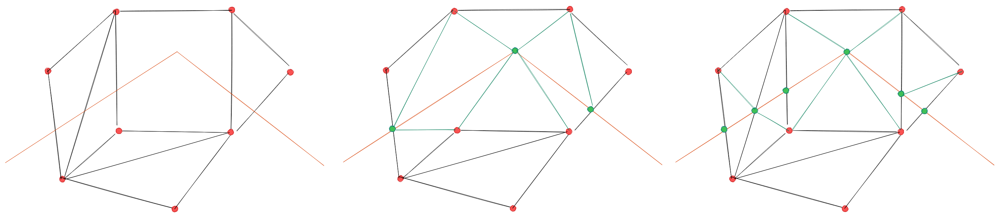
図 14.18 ラインジオメトリを使用したフォースメッシュ - エッジの交点に新しい頂点がない場合（中央）とある場合（右）の結果
Z値を内挿: 新しい頂点のZ値をどのように計算するかを設定します。これは:
メッシュ 自身: 新しい頂点のZ値は、その頂点が含まれる面の頂点から内挿されます
または 強制する線: 線が3Dベクタ地物または描画された線で定義されている場合、新しい頂点のZ値はそのジオメトリから導かれます。2Dライン地物の場合、新しい頂点のZ値は 頂点のZ値 となります。
許容範囲: 既存のメッシュ頂点が許容範囲よりも線に近い場合、線上に新しい頂点を作成せず、代わりに既存の頂点を使用します。この値は 縮尺済みメートル または 地図単位 で設定することができます（詳細は 単位セレクタ を参照）。
14.5.5. メッシュの再インデックス化
QGISは編集中、また元に戻す/やり直す操作を素早く行うために、削除された要素のために空の場所を保持します。これは、メモリ使用量の増加や非効率的なメッシュ構造を引き起こす可能性があります。 ツールは、このような穴を取り除き、面と頂点のインデックスをリナンバし、連続的である程度合理的な順序になるように設計されています。これにより、面と頂点の関係が最適化され、計算効率が向上します。
14.6. メッシュ計算機
メニューの先頭にある メッシュ計算機 ツールを使用すると、既存のデータセットグループに対して算術演算や論理演算を行い、新しいデータセットグループを生成できます（ 図 14.19 参照）。
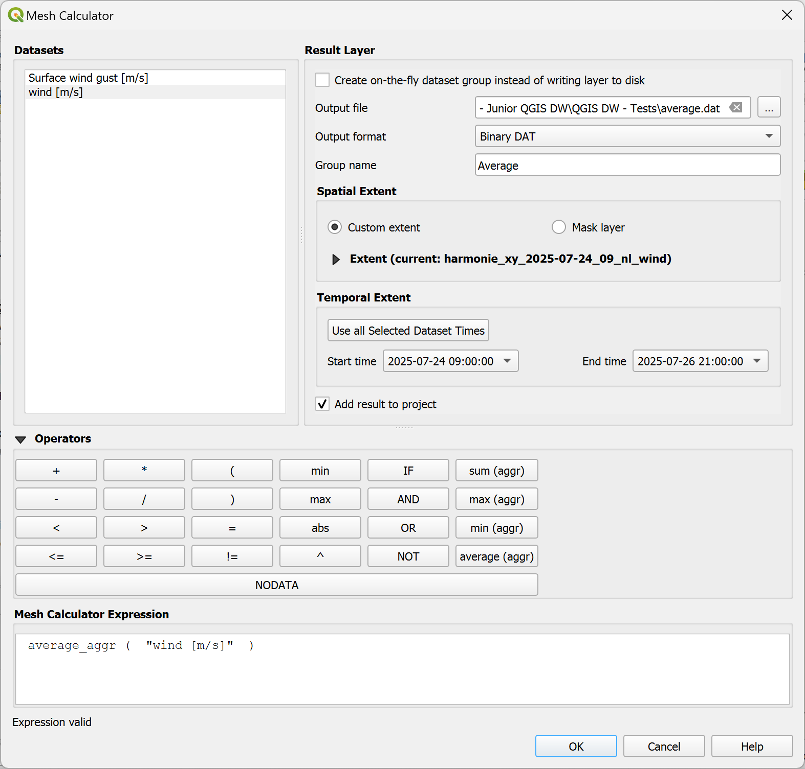
図 14.19 メッシュ計算機
データセット のリストには、アクティブなメッシュレイヤ内の全てのデータセットグループが含まれます。データセットグループを式で使用するには、リスト内でグループ名をダブルクリックします。すると、 メッシュ計算機の式 フィールドにグループが追加されます。続いて演算子ボタンを使用したりボックスに演算子を直接入力して、計算式を構築してください。
ラスタレイヤ では、出力レイヤのプロパティを設定できます：
- ディスクに書き込まないオンザフライ・ラスタを作成
これにチェックを入れない場合、出力結果は通常の新しいファイルとしてディスク上に保存されます。 出力ファイル のパスと、 出力形式 を指定する必要があります。
チェックを入れた場合、メッシュレイヤに新しいデータセットグループが追加されます。データセットグループの値はメモリには保存されておらず、各データセットはメッシュ計算機に入力された計算式で必要となった時に計算されます。この仮想のデータセットはプロジェクトに保存され、レイヤの ソース プロパティタブから必要に応じて削除したり、ファイルに永続化させたりすることができます。
どちらの場合でも、出力データセットグループの グループ名 を指定する必要があります。
空間範囲 は計算で考慮する範囲で、以下の設定があります：
defined as a Custom extent using the extent selector widget.
プロジェクトのポリゴンレイヤによる定義（ マスクレイヤ ）：ポリゴン地物のジオメトリを使用してメッシュレイヤのデータセットを切り抜きます
時系列範囲 ：データセットが考慮する時間範囲を 開始時刻 と 終了時刻 のオプションで設定します。これは、データセットグループの既存の時間ステップの中から選択します。また、 全ての選択データセット時間を使用 ボタンを押して、時間の全範囲を設定することもできます。
With the
Add result to project checkbox, the result layer
will automatically be added to the legend area and can be visualized.
Checked by default.
演算子 セクションには利用可能なすべての演算子があります。演算子をメッシュ計算機の式ボックスに追加するには、それに応じたボタンをクリックします。算術計算（ + 、 - 、 * など）や統計関数（ min 、 max 、 sum (aggr) 、 average (aggr) など）が利用できます。条件式（ = 、 != 、 < 、 >= 、 IF 、 AND 、 NOT など）は、偽の場合は 0 、真の場合は 1 を返すので、他の演算子や関数と共に使うことができます。 NODATA 値も式中で使用できます。
メッシュ計算機の式 ウィジェットには実行する式が表示され、式を編集することができます。